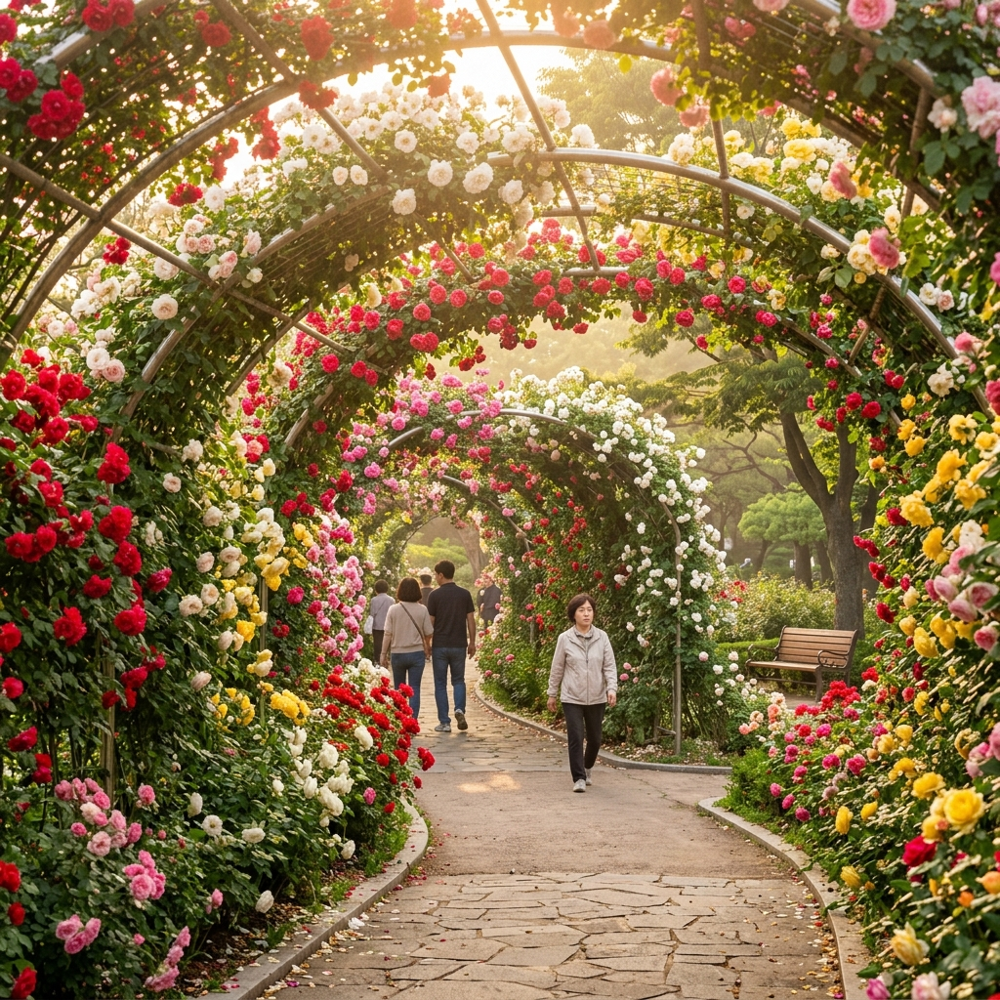
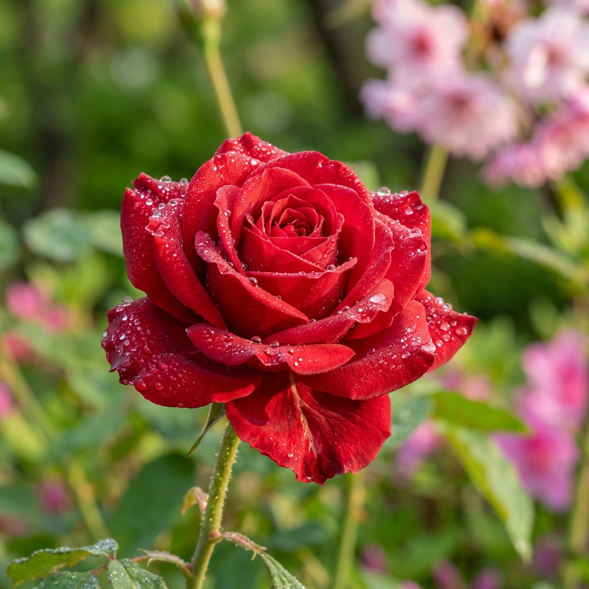
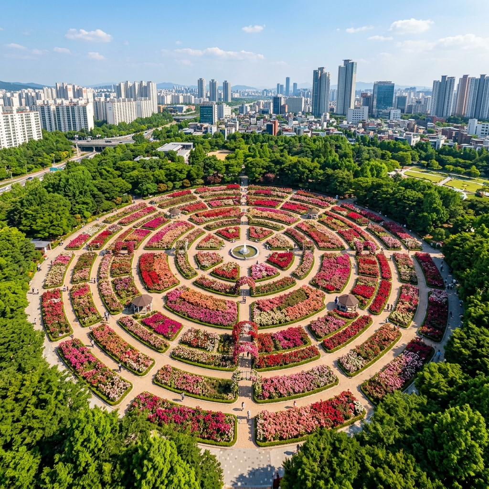

서울 보라매공원 장미터널 2026 — 동작구 도심 속 151종 2만5천 송이 무료 장미 정원 산책 완전 가이드
🌹 국내여행서울 동작구5월 중하순
서울 한복판에 이런 장미 정원이 있다는 사실을 아직 모르는 분들이 많습니다.
보라매공원 장미 정원은 중랑천처럼 5km짜리 대규모 터널은 아니지만, 151종 2만 5천 송이가 뒤얽혀 피어나는 밀도와 다양성에서 오히려 서울 어느 곳보다도 깊은 인상을 남깁니다.
입장료 0원, 주차장도 공원 내 무료, 심지어 24시간 개방이라는 점에서 5월 평일 오전 이른 시간이라면 인파 없이 혼자만의 장미 터널을 만끽할 수 있습니다.
2026년 5월 중순~하순, 개화 절정기를 맞아 지금 바로 코스를 잡아보세요.
| 항목 | 내용 |
|---|
| 장소 | 서울 동작구 신대방동 395 보라매공원 |
| 개화 절정 | 2026년 5월 15일~25일 (기상 조건에 따라 변동) |
| 입장료 | 무료 (연중 24시간 개방) |
| 지하철 | 7호선 보라매역 3번 출구 도보 5분 / 2호선 신대방역 2번 출구 도보 8분 |
| 주차 | 공원 내 유료 주차장 이용 가능 (시간당 약 1,000원) |
| 장미 규모 | 151종 약 2만 5천 그루 (장미원 구역 집중) |
🌸 5월 서울에서 보라매공원을 가야 하는 단 하나의 이유
서울에는 5월이면 장미 명소가 넘쳐납니다. 중랑천 5.45km 터널, 올림픽공원 장미광장, 어린이대공원 장미원까지. 그런데 왜 굳이 보라매공원일까요?
첫 번째 이유는 접근성입니다. 7호선 보라매역에서 내리면 3번 출구 계단을 오르는 순간 이미 공원 안입니다. 별도의 이동 없이 역에서 5분, 장미원 구역에서 10분이면 꽃 터널 안에 들어설 수 있습니다. 대중교통 이용자에게 서울 최상위 접근성을 자랑하는 장미 명소라고 해도 과언이 아닙니다.
두 번째 이유는 공원 자체의 다층적 매력입니다. 보라매공원은 단순한 꽃 구경지가 아닙니다. 1986년 공군사관학교 부지에서 전환된 역사를 가진 공원으로, 항공 전시관, 에너지드림센터, 다목적 운동장, 청소년 수련관까지 갖춘 서울의 복합 문화공원입니다. 장미 시즌에 아이들과 함께 방문하면 꽃 감상과 에너지·과학 체험을 동시에 즐길 수 있습니다.
세 번째 이유는 무료와 개방의 가치입니다. 5월 봄 시즌, 서울 주요 공원의 야외 행사 중 입장료 없이 이 수준의 장미 밀도를 누릴 수 있는 곳은 많지 않습니다. 가계 부담 없이 온 가족이 계절의 호사를 누릴 수 있다는 것, 보라매공원이 서울 시민에게 선물하는 진심 어린 초대장입니다.

보라매공원 장미 터널 5월 절정기 모습 / AI 제작 이미지
🏛️ 보라매공원이 걸어온 길 — 공군기지에서 시민의 정원으로
보라매공원의 이름에서 '보라매'는 공군사관학교의 상징 새, 즉 새끼 매를 뜻합니다. 1958년 공군사관학교가 이곳 신대방동 부지에 둥지를 틀었고, 이후 30여 년간 항공 장교를 길러낸 군사 교육의 심장부였습니다. 1985년 공군사관학교가 충청북도 청주 내덕동으로 이전한 뒤, 약 3년의 공원화 작업을 거쳐 1986년 5월 5일 어린이날에 맞추어 시민에게 개방되었습니다.
총 면적 약 43만 7천㎡(43.7ha), 이는 여의도공원(약 23만㎡)보다 거의 두 배에 달하는 규모입니다. 공원 안에는 공군사관학교의 흔적으로 항공우주 전시관이 운영 중이며, 실제 퇴역 항공기와 미사일 모형이 전시되어 있어 항공 마니아들의 순례지이기도 합니다.
현재는 동작구와 관악구 주민들의 생활 속 허파 역할을 하고 있습니다. 걷기 코스와 자전거 도로, 인라인 스케이트장, 야외 음악당, 보라매병원과 연결되는 도보길까지 갖춰져 있어 연간 수백만 명이 방문하는 서울 남서부 최대 도심 공원입니다.
🌹 장미 정원의 구성 — 151종 2만 5천 그루가 만드는 향기의 지도
보라매공원 장미 정원은 공원 정문에서 진입해 시계탑 방향으로 이어지는 중앙 산책 구역에 집중되어 있습니다. 이 구역을 중심으로 장미 터널 형식의 아치 구조물이 이어지며, 양쪽 화단에는 국내외 품종 151종이 조화롭게 배치되어 있습니다.
단순히 '많다'는 수치가 아닙니다. 151종이라는 다양성은 한 번의 방문에서 미니어처 로즈부터 찻잔 크기의 하이브리드 티 로즈, 덩굴장미인 클라이밍 로즈까지 아우를 수 있다는 의미입니다. 같은 빨간색이라도 진홍·코랄레드·루비레드가 다르고, 분홍도 연분홍·딥핑크·살구빛이 나란히 섭니다.
향기는 그 자체로 하나의 체험입니다. 장미의 향은 품종마다 완전히 다릅니다. '에덴 로즈' 계열은 달콤한 과일 향을, 올드 로즈 계열은 묵직한 클래식 향수 같은 깊이를 지닙니다. 이른 아침, 기온이 낮고 이슬이 아직 마르지 않은 시간대에 방문하면 공기 자체가 장미 향으로 가득 찹니다. 이 시간대를 절대 놓치지 마세요.
구역별 포인트
① 메인 아치 터널 구역: 시계탑 동쪽 출구 방면. 덩굴장미가 격자 아치에 올라탄 클래식 장미 터널. 아이와 함께라면 이 구역에서 인생샷 먼저.
② 화단 장미원 구역: 정문~분수광장 사이 좌우 화단. 각 품종별 명패가 달려 있어 품종 공부도 가능.
③ 클라이밍 장미 벽면: 야외 음악당 방면 담벼락. 분홍 클라이밍 로즈가 수직으로 올라탄 배경이 포토존 1위로 꼽힘.
④ 단풍나무 숲 인접 장미밭: 북쪽 숲 경계부. 초여름 신록과 장미가 조화를 이루는 자연스러운 풍경. 조용한 편이라 사색 산책에 적합.
📅 2026년 개화 시기와 절정 예측 — 언제 가야 할까?
장미는 기온과 강수량에 민감합니다. 서울 기준 보라매공원 장미의 개화는 보통 5월 첫째 주부터 시작되어, 5월 10~15일경 색이 올라오기 시작하며, 5월 15일~25일 사이가 절정입니다. 이 시기를 전후해 개화 속도는 기온에 따라 3~5일 앞당겨지거나 늦어질 수 있습니다.
2026년의 경우 5월 초부터 비교적 따뜻한 날씨가 이어지고 있어, 절정은 5월 14일~22일 구간에 집중될 것으로 예상됩니다. 기상청 2026년 5월 서울 기온 예보는 평년보다 1~2℃ 높은 추세를 보이고 있어, 꽃이 빠르게 피고 빠르게 질 가능성에 대비해 주말을 기다리기보다 가능하면 이르게 방문하는 것이 유리합니다.
오전 7시~9시 방문을 적극 추천합니다. 이 시간대는 방문객이 극히 적고, 장미 특유의 향기가 공기를 가득 채우며, 아침 햇살이 꽃잎을 후광처럼 투과하는 최고의 사진 조건을 만들어 냅니다. 낮 12시 이후부터는 직사광선으로 인해 꽃잎이 과도하게 밝게 찍히고 방문객도 급증합니다.
비 오는 다음 날 오전도 훌륭한 선택입니다. 꽃잎에 맺힌 물방울이 자연 렌즈 역할을 하며, 꽃 색이 더욱 선명하게 살아납니다.

이른 아침 이슬 맺힌 보라매공원 장미 클로즈업 / AI 제작 이미지
📸 사진 명당 TOP 4 — 인생샷 포인트와 촬영 팁
보라매공원에서 사진을 찍을 때 알아두면 완전히 달라지는 4가지 포인트를 정리했습니다.
① 아치 터널 중앙 소실점 샷
아치 터널의 한가운데 서서 정면을 바라보면 장미로 뒤덮인 아치가 원근법적으로 수렴되는 장면이 나옵니다. 스마트폰은 0.5배 초광각, DSLR은 24mm 이하 광각 렌즈가 유리합니다. 배경에 사람이 적으면 입구~출구까지 전체가 꽃의 터널로 채워지는 환상적인 사진이 완성됩니다.
② 클라이밍 로즈 담벼락 배경
야외 음악당 방면 담벼락에 분홍 클라이밍 로즈가 올라탄 구역은 2m 이상 높이의 자연 꽃 배경이 형성됩니다. 배경이 꽃으로만 채워지기 때문에 인물 사진의 배경지로 최상입니다. 스마트폰 인물사진 모드를 활용하면 배경이 자연스럽게 블러 처리됩니다.
③ 벤치 + 장미 화단 황혼 샷
오후 6~7시, 태양이 낮게 기우는 시간대에 벤치에 앉아 옆쪽에서 찍으면 황금빛 역광에 꽃잎이 반투명하게 빛나는 효과가 납니다. 이 시간대의 색온도와 장미의 빨강·분홍이 조화를 이루어 따뜻하고 영화적인 분위기를 만들어 냅니다.
④ 드론 없이 고각 시점 확보하기
공원 내 에너지드림센터 2층 전망 공간에서 내려다보면 장미 정원 전체 구성이 한눈에 들어옵니다. 실내에서 유리창을 통해 찍는 방식이지만 구성감 있는 '위에서 내려다본' 구도를 얻을 수 있습니다. 단, 유리 반사를 피하려면 렌즈를 창에 밀착시켜야 합니다.
🚇 교통 안내 — 지하철·버스·자동차 별 최적 동선
| 교통 수단 | 경로 및 소요 시간 |
|---|
| 지하철 (추천) | 7호선 보라매역 3번 출구 → 공원 서문 직결, 도보 약 5분 |
| 지하철 대안 | 2호선 신대방역 2번 출구 → 공원 정문, 도보 약 8~10분 |
| 버스 | 동작01 마을버스 보라매공원 정류장 하차 / 5535, 5522번 등 여러 노선 이용 가능 |
| 자동차 | 보라매공원 내부 유료 주차장 이용. 시간당 약 1,000원. 5월 주말은 오전 9시 이전 주차 권장 |
| 자전거 | 따릉이 보라매역 정류장 / 공원 진입 후 공원 내 자전거 도로 이용 (장미원 구역은 도보만) |
자동차를 이용할 경우, 주말 오전 10시 이후에는 주차 공간 확보가 어려울 수 있습니다. 서울 주차장 앱 또는 네이버 지도에서 공원 주차장 현황을 사전에 확인하세요. 인근 보라매병원 주변 공영 주차장도 대안이 될 수 있습니다.
🍱 주변 맛집과 카페 — 꽃 산책 전후 완성하는 코스
보라매공원 주변 신대방 · 보라매 상권은 평일 직장인 수요를 바탕으로 가성비 좋은 식당이 탄탄하게 자리 잡고 있습니다.
신대방 먹자골목 (7호선 보라매역 인근): 보라매역 출구 주변으로 한식 뷔페, 국밥집, 파스타 전문점이 밀집해 있습니다. 점심 시간 줄서는 국밥 집은 이 동네만의 특색이며, 4,000~6,000원대 가격이 서울 도심으로서는 믿기지 않을 수준입니다.
공원 내 카페 및 편의점: 공원 내부에 작은 카페 공간이 있으며, 아이스 아메리카노 한 잔 들고 장미길을 걷는 코스가 봄 나들이의 정석입니다. 벤치가 곳곳에 있어 피크닉 스타일도 가능합니다. 단, 음식물 반입은 일부 구역에서 제한될 수 있으니 안내 표지판 확인 필수입니다.
관악 칼국수 로드: 신대방역~보라매역 사이 골목에는 손칼국수 전문점이 여러 곳 있습니다. 5월의 상쾌한 날씨에 장미 산책 후 따끈한 바지락 칼국수 한 그릇은 최고의 마무리입니다.

보라매공원 장미 정원 전경 — 도심 속 꽃 정원 조감 / AI 제작 이미지
🏞️ 보라매공원 당일치기 코스 — 장미 산책 + α
장미만 보고 돌아가기엔 보라매공원이 너무 아깝습니다. 반나절 여유가 있다면 다음 코스를 추천합니다.
[오전 9시] 7호선 보라매역 3번 출구 → 서문 입장, 메인 아치 터널부터 시계 방향 장미 정원 전 구역 산책 (약 40~60분)
[오전 10시] 항공우주 전시관 방문. 퇴역 전투기, 헬기 실물 전시 관람. 아이들과 함께라면 반드시 들러야 할 포인트 (무료, 약 30분)
[오전 11시] 에너지드림센터 방문. 태양광·풍력 등 신재생에너지 체험 전시. 환경 교육 목적의 학습 공간 (무료, 약 30분)
[낮 12시] 신대방역 먹자골목에서 점심. 칼국수 또는 뷔페 추천.
[오후 1시] 공원 벤치에서 커피 한 잔과 함께 휴식 또는 자전거 도로 이용 (따릉이 30분 무료 이용 가능)
[오후 2시] 서울대학교 관악캠퍼스 방향으로 이동 (버스 약 15분), 캠퍼스 산책로 신록 감상 후 귀가
⚠️ 방문 전 꼭 알아야 할 주의사항
💡 팁: 평일 오전이 최고입니다
주말 낮 12시~3시는 유모차와 가족 단위 방문객으로 장미 정원 구역이 상당히 붐빕니다. 고요한 분위기에서 꽃을 감상하려면 평일 오전 방문이 압도적으로 유리합니다. 특히 5월 둘째~셋째 주 평일 오전은 방문객이 극히 적습니다.
⚠️ 주의: 꽃 훼손 행위 절대 금지
일부 방문객이 사진 촬영 목적으로 꽃가지를 꺾거나 구부리는 사례가 있습니다. 공원 관리 차원에서 엄격히 금지되며 적발 시 과태료 대상입니다. 손을 뻗어 잡아당기는 행위, 화단 밟기 모두 해당됩니다.
5월 날씨 대비 준비물 체크리스트
- 자외선 차단제 (5월 자외선 지수 최고 수준)
- 모자 또는 양산 (꽃 중간 나무 그늘이 적음)
- 가벼운 물통 (공원 내 수도꼭지 있음)
- 편한 운동화 (아스팔트 + 흙길 혼재)
- 카메라 or 스마트폰 보조배터리 (사진 찍다 방전 주의)
🔍 서울 장미 명소 비교표 — 보라매 vs 중랑 vs 올림픽공원
| 명소 | 규모 | 특징 | 혼잡도 | 입장료 |
|---|
| 보라매공원 | 151종 2만 5천 송이 | 도심형, 접근성 최상, 복합 체험 | 중 (평일 낮음) | 무료 |
| 중랑천 장미공원 | 5.45km 터널 | 국내 최장 터널, 대규모 야간 행사 | 매우 높음 | 무료 |
| 올림픽공원 | 165종 장미광장 | 광장형, 88올림픽 기념 공원 연계 | 높음 (주말) | 무료 |
| 에버랜드 장미원 | 700여 종 | 테마파크 내 장미 전시 | 높음 | 입장료 있음 |
📅 5월 서울 장미 개화 시기 총정리
2026년 5월 서울 주요 장미 명소의 절정 시기를 정리하면 다음과 같습니다. 날씨 변화에 따라 ±3~5일 범위에서 앞당겨지거나 지연될 수 있습니다.
| 명소 | 절정 예상 시기 | 비고 |
|---|
| 보라매공원 | 5월 14일~22일 | 평년 대비 1~2일 이른 개화 예상 |
| 중랑천 서울장미축제 | 5월 15일~23일 (행사 기간) | 공식 축제 기간 중 절정 |
| 일산 호수공원 | 5월 17일~25일 | 북쪽이라 서울보다 2~3일 늦음 |
| 올림픽공원 | 5월 13일~21일 | 동서울, 보라매와 유사한 시기 |
| 인천 청량산 | 5월 20일~28일 | 수국 시즌으로 이어지는 구간 |
#보라매공원장미
#서울장미명소
#5월서울여행
#보라매공원꽃
#서울무료나들이
#동작구장미
#서울봄꽃
#장미개화2026
#서울공원산책
#보라매역맛집